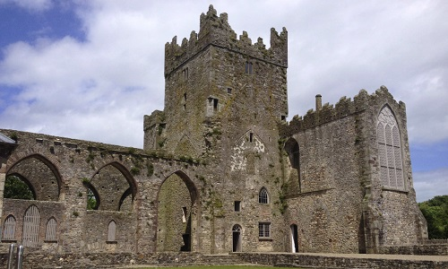
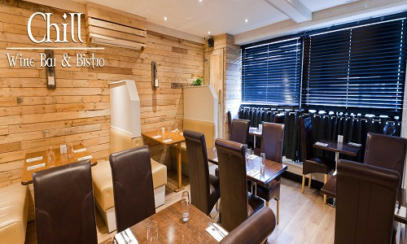
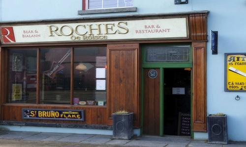
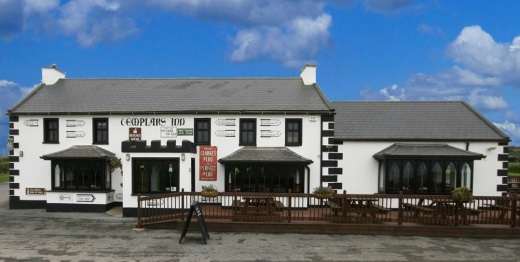

Cafés
Hook Lighthouse Café
Whether your taking a guided tour or browsing in our craft shop, a visit to the Hook Peninsula is not complete without treating yourself in the Lighthouse Café. A range of sumptuous foods and coffees are available in a relaxed atmosphere in the former keepers houses.
- Hook Head, County Wexford.
- Tel: 051 397055
- info@hookheritage.ie
- www.hookheritage.ie
Tintern Abbey Tea Rooms
Tintern Abbey Tea Room is a busy, fun, family run cafe serving excellent coffee, teas, cakes and light meals. Customer service and a friendly smile are essential ingredients happily served up with every order. Bring your family along for the experience – visit the Abbey and learn about the Cisterians and the Colcloughs, enjoy the Tintern Trails walks and visit the Colclough Walled Garden. Start, or finish your visit with the best coffee on the peninsula.
- Tintern Abbey, Saltmills, County Wexford.
- Tel: 087 103 3846
- tinternabbeytearoom@yahoo.com
- www.tinternabby.ie
Wine Bars
Greenacres Wine Bar
Enjoy lunch in the best restaurant in Wexford with homemade food from our deli amidst shelves of award-winning wines. Green Acres is an exceptional and unique retail business over 3 floors in the heart of Wexford town. During your journey through the 1800’s listed building, you will discover a retail store with deli, a bakery & a café as well as a restaurant and an art gallery.
- Selskar, Wexford, Y35 RW7C
- Tel: 053 912 2975
- info@greenacres.ie
- www.greenacres.ie
Chill Wine Bar & Bistro
At Chill Wine Bar & Bistro we believe in providing quality, fresh and affordable food to all of our customers. The fun and quirky environment that makes Chill Wine Bar & Bistro so different and our passion for offering tasty, simple and creative international dishes with an Irish flair is what makes our restaurant stand out from our competitors. Come in and relax in Chill Bistro’s wine and cocktail bar. Our extensive menu is guaranteed to cater for all tastes.
- 100 - 101 Main Street, Gorey, Co. wexford
- Tel: 053 94 83576
- info@chillbistro.ie
- www.chillbistro.ie
Resturants
The Hollow Restaurant
Visit us to enjoy our fantastic range of fresh locally sourced seafood or meat dishes served with our tasty fresh salads. Our delicious homemade desserts are a must and we have a new range of amazing gluten free options. All food is cooked to order. Enjoy a quiet drink, a home cooked meal or a light snack with food served in the restaurant from 12pm with last orders at 9pm. Our new Take Away is open from 4-10pm Mon-~Sat and 2-10pm Sunday. Parties and special occasions catered for. Situated on the Wexford/Duncannon new line.
- Ramsgrange, New Ross, County Wexford.
- Tel: 051 389230
- info@thehollowbar.ie
- www.thehollow.ie
Roches Bar and Sqigl Resturant
Recommended by the Georgina Campbell Guide, Roches family friendly traditional public house is situated in the picturesque seaside village of Duncannon, across from the beach. We serve excellent food in our cosy bar every day from 12:30pm. We focus on fresh, homemade cooking and our food is sourced local where possible, focusing on our wealth of fresh fish and local produce. With a tranquil enclosed beer garden and covered smoking area, relax in style. Come and listen to one of our great live bands which play weekly throughout the year.We stock a range of Irish Craft Beers, provide a Children’s Menu, have an open fire in the winter and have WIFI available for our customers.
- The Quay Duncannon Wexford
- Tel: 051 389 188
- info@sqiglrestaurant.com
- www.sqiglrestaurant.com
Bars
Neville’s Bar
Neville’s is a Failte Ireland family friendly award winning Gastro Pub and recipient of the Failte Ireland Pubs of distinction award. Neville’s offers more than your typical bar, it offers imaginative, high quality food and drink at reasonable prices in a relaxed, casual atmosphere. You can visit the original Neville’s Pub which is adjacent, a traditional hostelry established in 1761. Excellent food is served daily from 12.30pm in a family friendly environment, eat inside or al fresco. We are committed to using local ingredients and suppliers wherever possible. We have a private room available for functions and we now offer our bar menu for takeaway. Wi-Fi and baby changing facilities available.
- Fethard on Sea, New Ross, County Wexford.
- Tel: 051 397160
- info@nevilles.ie
- www.nevilles.ie
Templars Inn
Templars Inn Seafood Bar & Restaurant – Serving Delicious Locally Sourced Fresh Seafood Daily from 12.30 – 9pm. Offering a cosy family friendly atmosphere & an extensive outdoor seating area with fabulous sea views for alfresco dinners and sun lovers, a great place to relax after sightseeing around the Hook Peninsula.
- Templetown, Fethard-on-Sea New Ross, County Wexford.
- Tel: 051 397162
- info@thetemplarsinn.ie
- www.thetemplarsinn.ie